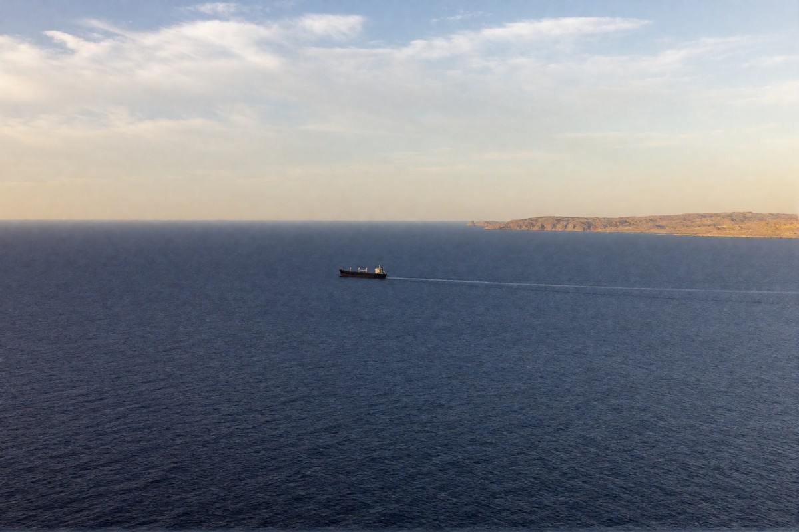

Geopolitica · 11 novembre 2026
L'accordo marittimo fra Turchia e Libia arriva sul tavolo europeo

Il premier greco porta al vertice informale di Dublino il memorandum ratificato dal parlamento della Cirenaica. Atene lo chiama illegale e nullo, Ankara lo difende come legittimo.
di Franco Zanghì
Venerdì 13 novembre 2026, a Dublino, i capi di Stato e di governo dell'Unione europea si riuniscono per un vertice informale dedicato soprattutto all'intelligenza artificiale e all'Ucraina. Ma il premier greco Kyriakos Mitsotakis, secondo quanto riferisce Politico Europe citando un alto funzionario di Atene, porterà sul tavolo anche un'altra questione: l'accordo marittimo fra Turchia e Libia.
Che cos'è quell'accordo
Nel 2019 la Turchia firmò con il governo di Tripoli, allora riconosciuto dalle Nazioni Unite, un memorandum che disegna le zone marittime fra le due coste. È una linea che taglia il mare fra Creta e Cipro, in acque che la Grecia considera proprie. Nel 2020 il parlamento della Libia orientale lo aveva respinto all'unanimità, rompendo con Ankara.
Il voltafaccia del 20 ottobre
Il 20 ottobre 2026 lo stesso parlamento, che fa capo al generale Khalifa Haftar, l'uomo forte della Cirenaica, lo ha ratificato, ancora una volta all'unanimità. Lo riferiscono Al Jazeera e l'agenzia Reuters. Saddam Haftar, figlio del generale e suo vice, ha salutato il voto come una difesa degli interessi libici nel Mediterraneo.
Perché questo cambio di rotta? Secondo il quotidiano greco Proto Thema, Ankara ha ricostruito i rapporti con l'est della Libia offrendo investimenti, sostegno finanziario e appoggio alle ambizioni politiche di Saddam Haftar. E secondo Al Jazeera, a luglio la Turchia aveva già firmato con le forze di Haftar un accordo per sviluppare strutture militari.
Le reazioni
Atene ha definito il memorandum illegale, nullo e privo di effetti; il ministro degli Esteri greco, Giorgos Gerapetritis, ha detto che non sarà applicato in nessun caso. Ursula von der Leyen, presidente della Commissione europea, ha firmato con il presidente del Consiglio europeo António Costa una dichiarazione che lo definisce nullo e senza valore, con solidarietà a Grecia e Cipro. Anche l'Egitto lo ha respinto. Dall'altra parte il ministro degli Esteri turco, Hakan Fidan, lo difende come un accordo del tutto legittimo.
Che cosa c'è in gioco
Secondo la stampa greca, Atene teme che Ankara usi l'intesa per contestare le ricerche di gas a sud di Creta e il cavo elettrico sottomarino fra Grecia e Cipro, un progetto da 1 miliardo e 900 milioni di euro.
Perché riguarda anche noi
La Libia è uno dei nostri fornitori di energia, e dalle sue coste parte una quota importante dei migranti diretti in Italia. Un legame sempre più stretto fra Ankara e la Libia orientale cambia gli equilibri nel mare davanti a casa nostra.
Il passaggio da guardare è il vertice di venerdì. Se la questione entrerà nei rapporti fra l'Unione e la Turchia sarà un segnale; e secondo Politico Europe, in caso di escalation, Atene è pronta a chiedere all'Europa delle sanzioni.
Fonti
- Politico Europe, «Greek PM to raise Turkey-Libya maritime deal at EU summit», 11 novembre 2026
- Agenzia Nova, «Mediterraneo: Politico, Grecia porterà al vertice Ue disputa sui confini marittimi con la Libia», 11 novembre 2026
- Al Jazeera, «Eastern Libya parliament approves maritime deal with Turkey», 20 ottobre 2026
- Cyprus Mail, «Turkey-Libya maritime deal remains invalid, Greek foreign minister says», 21 ottobre 2026
- Middle East Eye, «Null and void: Egypt condemns Turkey-Libya maritime deal», 21 ottobre 2026
L'eventuale richiesta greca di sanzioni in caso di escalation è riferita da Politico Europe; i timori sulle ricerche di gas a sud di Creta e sul cavo Grecia-Cipro sono attribuiti alla stampa greca.